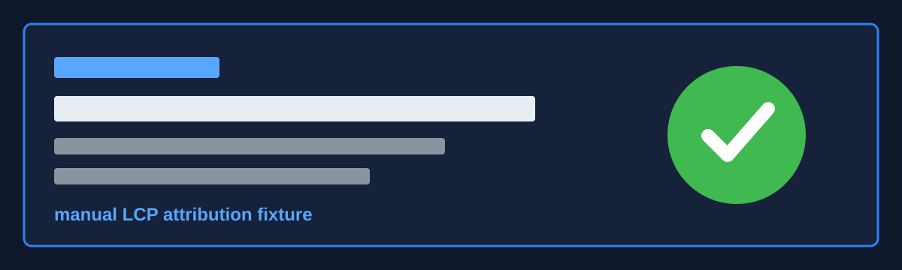

LCP Attribution
Reload to capture a fresh LCP attribution span, then inspect it in the console.

Expected Attributes
- span name
- webvitals
- metric
- lcp
- target mode
- safe selector
- lcp.url
- origin + pathname, no query string
Reload to capture a fresh LCP attribution span, then inspect it in the console.
